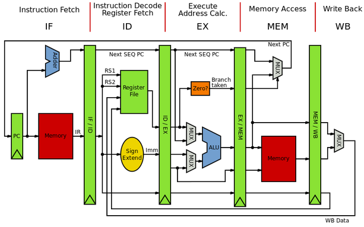

Subcategories Page
Links:
Subcategories.
The discipline of computer architecture has three main subcategories.

*Instruction set architecture (ISA)
defines the machine code that a processor reads and acts upon as well as the word size, memory address modes, processor registers, and data type.
*Microarchitecture:
also known as "computer organization", this describes how a particular processor will implement the ISA.[14] The size of a computer's CPU cache for instance, is an issue that generally has nothing to do with the ISA.
*Systems design:
ncludes all of the other hardware components within a computing system, such as data processing other than the CPU (e.g., direct memory access), virtualization, and multiprocessing
There are other technologies in computer architecture. The following technologies are used in bigger companies like Intel, and were estimated in 2002 to count for 1% of all of computer architecture:
*Macroarchitecture:
architectural layers more abstract than microarchitecture
*Assembly instruction
set architecture: A smart assembler may convert an abstract assembly language common to a group of machines into slightly different machine language for different implementations.
*Programmer-visible macroarchitecture:
higher-level language tools such as compilers may define a consistent interface or contract to programmers using them, abstracting differences between underlying ISA, UISA, and microarchitectures. For example, the C, C++, or Java standards define different programmer-visible macroarchitectures.
*Microcode:
microcode is software that translates instructions to run on a chip. It acts like a wrapper around the hardware, presenting a preferred version of the hardware's instruction set interface. This instruction translation facility gives chip designers flexible options: E.g. 1. A new improved version of the chip can use microcode to present the exact same instruction set as the old chip version, so all software targeting that instruction set will run on the new chip without needing changes. E.g. 2. Microcode can present a variety of instruction sets for the same underlying chip, allowing it to run a wider variety of software.
*UISA:
User Instruction Set Architecture, refers to one of three subsets of the RISC CPU instructions provided by PowerPC RISC Processors. The UISA subset, are those RISC instructions of interest to application developers. The other two subsets are VEA (Virtual Environment Architecture) instructions used by virtualisation system developers, and OEA (Operating Environment Architecture) used by Operation System developers.[15]
*Pin architecture:
The hardware functions that a microprocessor should provide to a hardware platform, e.g., the x86 pins A20M, FERR/IGNNE or FLUSH. Also, messages that the processor should emit so that external caches can be invalidated (emptied). Pin architecture functions are more flexible than ISA functions because external hardware can adapt to new encodings, or change from a pin to a message. The term "architecture" fits, because the functions must be provided for compatible systems, even if the detailed method changes.